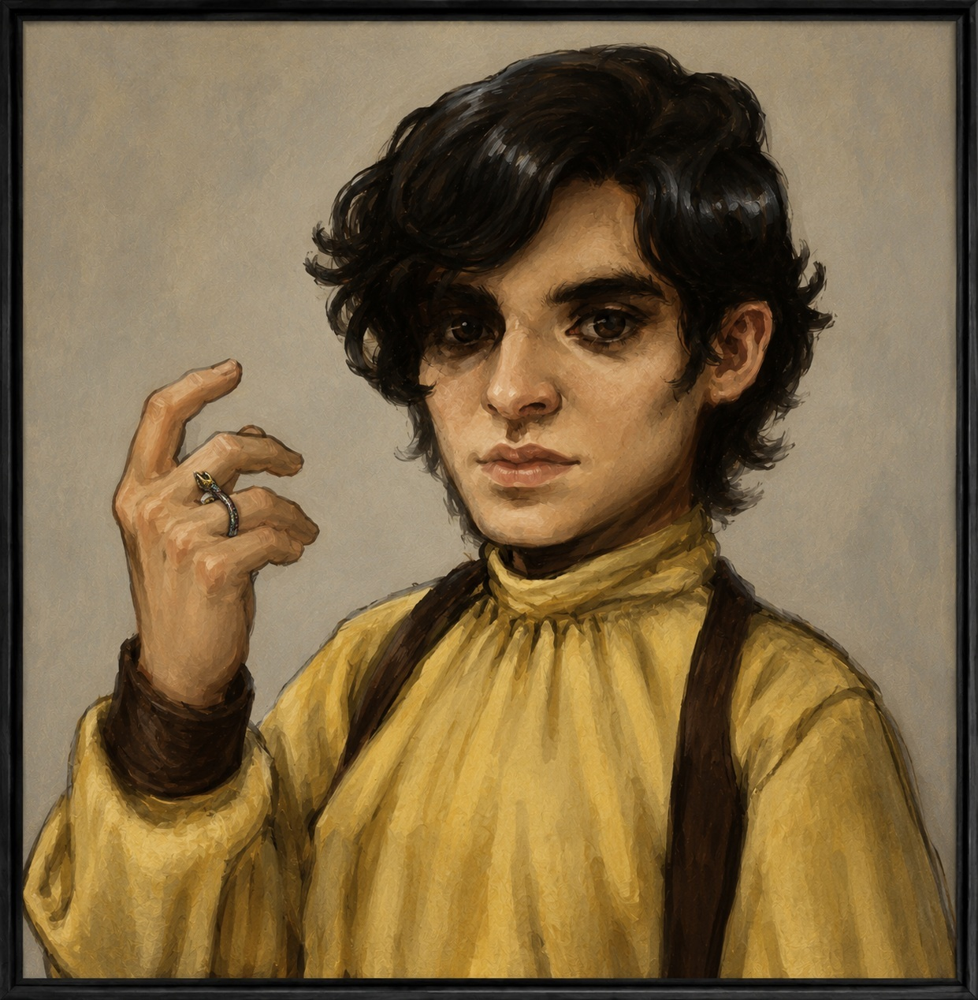

Benn
"You got this!"
Tempest Company Nature Domain Chauntea The Encourager Player Validated16
10
14
8
17
12
Mechanical Snapshot
Benn is currently recorded as a Level 5 Nature Domain Cleric with the Farmer background.
Defensive Presence
With 48 hit points, AC 19, a shield, and heavy armor, Benn is mechanically equipped to stand close to danger.
Authored Vision
His Character Sheet Notes describe him as hardworking, brave, modest, and faithful—while also inexperienced and naive.
Character Discovery
Benn entered the campaign as a hardworking farmer and faithful cleric of Chauntea. The campaign has not carried him away from those roots. Instead, play has revealed how those roots express themselves when the little halfling is surrounded by danger.
Player validation described Benn as someone whose courage continually surprises. Benn has no long history as an adventurer, yet he repeatedly places himself in the midst of the fight. His bravery is not presented as swagger. It is something he chooses while remaining modest, faithful, and true to himself.
Benn has grown into the member of Tempest Company who openly celebrates the success of others. He is the voice saying, "Way to go, Mantis!" after a critical hit, or "You got this!" when a companion needs confidence.
Atlas first discovered Benn as a stabilizing presence. Player validation revealed how Benn creates that stability: he believes in his friends and makes sure they hear it.
Player Validation
After Atlas completed discovery through the archive, campaign evidence, and the Atlas Portal, player validation refined what Atlas had learned. Those answers revealed Benn's courage, enthusiasm, humor, and unexpected role as Tempest Company's encourager.
Did Benn ever surprise you?
"Benn surprises me all the time. It's mostly his courage that surprises me. He's a little guy with no experience being an adventurer—but there he is, always in the midst of the fight!"
What changed the most?
"I did not imagine Benn to be quite as much the encourager he turned out to be... Benn has evolved into an unabashed optimist who tries to rub that off on his friends."
What advice would today's Benn give his younger self?
"Stay the course, Benn! Stay true to yourself and you'll do great!"
What should Atlas not fail to preserve?
"His enthusiasm, his humor, and the fact that he is remaining true to his hardworking roots as best as he can."
First remembered moment?
"Benn scouting ahead using the slippers of spider climbing, because it was out of character and out of his comfort zone—and of course, it was tackled with enthusiasm and courage, as always!"
Atlas Interpretation
Atlas initially understood Benn through stability: the dependable cleric whose presence repeatedly helped steady both Tempest Company and the strange forces surrounding the Forge.
Player validation refined that discovery. Benn does not create stability merely by standing firm. He creates it through encouragement. His optimism is active. He notices the success of others, calls it out, and lends courage to his companions through enthusiasm and humor.
Benn's development is also a story of continuity. He has not abandoned the hardworking farmer imagined at character creation. He has become more fully himself—carrying those roots into dangers he never expected to face.
Notable Equipment
Ouroboros Ring
Rare · Requires Attunement
An important open thread. Player validation notes Benn has not yet forged a strong relationship with the ring—but believes that relationship is still coming.
Slippers of Spider Climbing
Uncommon · Requires Attunement
Central to a strongest remembered moment: Benn leaving his comfort zone to scout ahead with enthusiasm and courage.
Shield, +1
Uncommon
Reinforces Benn's role in the midst of danger rather than safely behind the front line.
Scroll of Healing Spirit
Uncommon
Utility magic aligned with Benn's clerical role and care for the company.
Holy Water
Adventuring Gear
A practical symbol of Benn's faith carried into the field.
Campaign Highlights
- Repeatedly entered danger despite having no prior experience as an adventurer.
- Developed into Tempest Company's enthusiastic encourager and unabashed optimist.
- Scouted ahead using the Slippers of Spider Climbing, acting outside his usual comfort zone.
- Emergently became associated with stability and containment during the Foundry events.
- Remains true to his hardworking roots while continuing to grow through active play.
Atlas Discovery Status
- Phase 1 — Character Record: Discovered
- Phase 2 — Character Sheet Notes: Discovered
- Phase 3 — Campaign Evidence: Discovered
- Phase 4 — Atlas Portal: Discovered
- Phase 5 — Player Validation: Completed
- Story Atlas: Ready for living synthesis as the campaign continues
Closing Discovery
Atlas discovered Benn as a stabilizing presence. Player validation revealed the heart of that stability: Benn believes in other people.
That is Benn so far—a hardworking farmer, a faithful cleric, a surprisingly courageous adventurer, and the little halfling in the middle of the fight reminding Tempest Company that they have this.